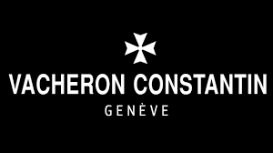
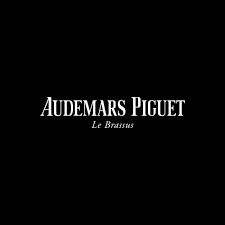
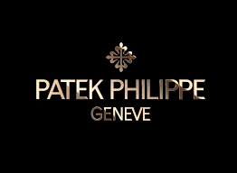
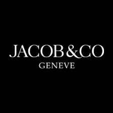
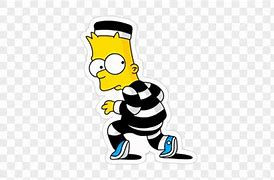

Principales marcas
- Vacheron Constantin
- Jacon & CO
- Patek Phillipe
- Audemars Piguet
- Rolex
Mas Antiguos
Vacheron Constantin
Vacheron Constantin es una manufactura suiza de relojes fundada en 1755. Desde 1996 es filial del grupo suizo Richemont. Vacheron Constantin es uno de los fabricantes de relojes más antiguos del mundo con una historia ininterrumpida desde su fundación. Emplea unas 1200 personas, la mayoría en los talleres situados en el cantón de Ginebra y en el valle de Joux
Audemars Piguet
Audemars Piguet, fundada en 1875 por Jules-Louis Audemars y Edward-Auguste Piguet, es una manufactura de relojería suiza, cuya sede está en Le Brassus en el valle de Joux. La marca, presente en 88 países, cuenta con 1600 colaboradores (1000 en Suiza).La manufactura dispone de una decena de filiales y de unas veinte boutiques.La empresa produce unos 40 000 relojes al año, todos confeccionados a mano.
Patek Phillipe
Patek Philippe & Co es una empresa suiza de relojes de lujo.Antoni Patek comenzó haciendo relojes de bolsillo en 1839 en Ginebra, junto con su colega polaco Franciszek Czapek. Se separaron en 1844, y en 1845 Patek se unió con el relojero francés Adrien Philippe, inventor del mecanismo de disolución sin llave. En 1851, se fundó la Patek Philippe & Co
De Mayor Valor
Jacob & CO
Jacob & Co. es un minorista estadounidense de joyería y relojes de pulsera fundado en 1986 por el diseñador de diamantes Jacob Arabo.Su boutique insignia y su sede corporativa se encuentran en Manhattan , Nueva York .Después de graduarse anticipadamente de un curso de diseño de joyería en 1981 en la ciudad de Nueva York , Jacob Arabo abrió un pequeño stand en el Distrito Diamante de la ciudad de Nueva York , donde comenzó a diseñar para marcas de joyería y clientes privados.En 1986, Arabo abrió su propia empresa, llamada "Diamond Quasar", y comenzó a diseñar bajo su propia marca, llamada "Jacob & Co."La marca rápidamente ganó popularidad en Nueva York y pudo expandir su negocio a la industria de la relojería de lujo en 2002.
 Rolex
Rolex S. A. es una empresa suiza de relojes de pulsera de lujo y accesorios, creada tras la fusión de Montres Rolex SA y Rolex Industrie SA Es una de las marcas suizas de relojería más consideradas. Se sitúa en el segmento más alto de relojería industrial, en el que compiten con Omega, Zenith y Girard Perregaux, que es un segmento inferior al de la más alta relojería artesanal Rolex es una de las marcas de relojes más famosas, con mayor reconocimiento del público y con mayor stock en el mundo, pues produce más de 2000 relojes al día.